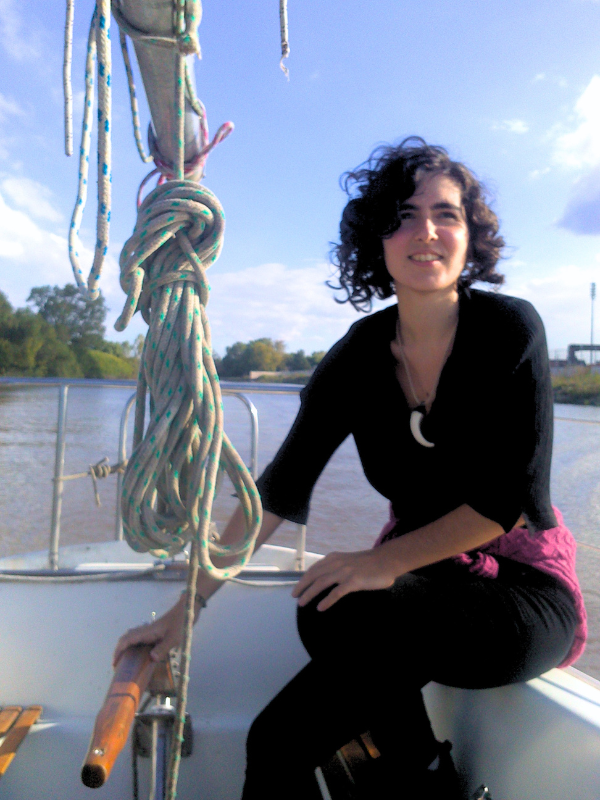

Macarena Lastra
Enviromental Data Analysis
About me

My journey into biology began in the classrooms of the UNLP, where I completed two years of my degree. I first went in searching for fossils and paleontology, but walked away with a deep love for botany.
Although my path took a different turn, that passion remains intact. I am currently training as an environmental data analyst, focusing on monitoring and geolocation tools. I am particularly drawn to botany and aquatic life, and I look forward to crossing data with nature to find practical solutions and answers to today's environmental challenges.
Skills
- Remote Sensing Foundations
- Satellite Imagery Analysis
- HTML5
- CSS3
- JavaScript
Find me on...